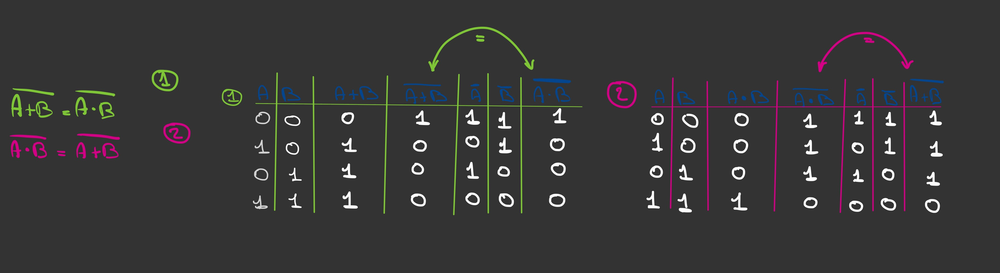
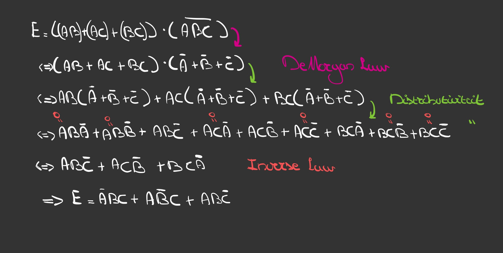
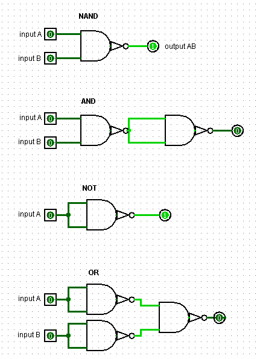
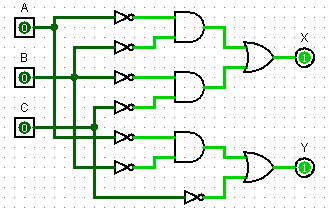
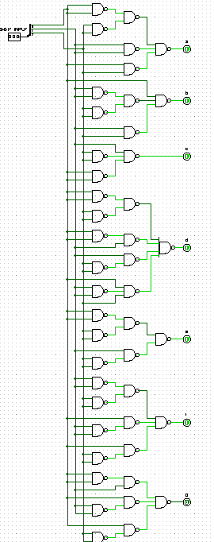
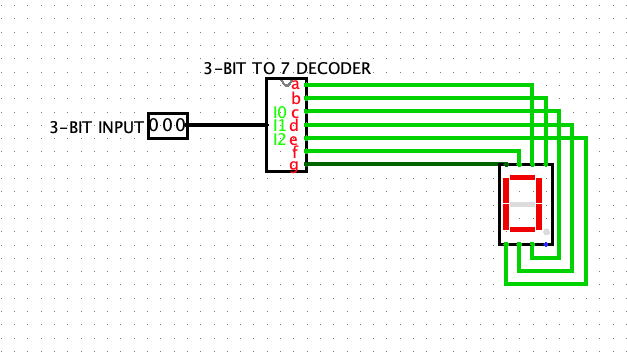

Verslag
Verslag
Titel: Project 1
Dit verslag werd opgesteld door:
- Naam: Max Etman
Studentennummer: 20204398
Email adres: Max.Etman@student.uantwerpen.be
- Naam: Pablo Deputter
Studentennummer: 20205440
Email adres: Pablo.Deputter@student.uantwerpen.be
Aantal man-uren besteed: 9 uur
Moeilijkheidsgraad: 5 /10
Verschillende links:
Home
Project2
Project3
Inhoud van de oplossing
De oplossing bestaat uit de volgende bestanden (geef alle bestanden op):
Verslag
Opdracht 1
Onderstaande foto laat zien hoe de eerste opdracht is opgelost. Hierbij hebben wij aan de hand van een waarheidstabel 'De Moran's theorem' bewezen. Dit was vlot opgelost door de uitkomsten van de 'boolean algebra' te vergelijken.

Opdracht 2
Aan de hand van de eerder bewezen 'De Moran's theorem' koden we de basisformule opsplitsen. Nadat we dit hadden gedaan konden we hierop distrbutiviteit toepassen, dankzij de 'Inverse Law' kan de meerderheid van de elementen geschrapt worden omdat deze op 0 uitkomen. Voor dat we dit het eindresultaat noemen kunnen we de verschillende elementen nog wat ordelijker op alfabetische volgorde zetten.

Opdracht 3
In 'inhoud van de oplossing' kan het logisim circuit gevonden wordenden voor opdracht 3. Zie onderstaande foto voor een screenshot van het circuit.

De 'basic' 'AND-gates', 'OR-and' en 'NOT-gates' worden hier enkel voorgesteld met 'NAND-gates'. Alle poorten kunnen dus herbouwd worden met enkel het gebruik van 'NAND-gates'. Na enkele keren experimenteren met onze zelfgemaakte 'NAND-gate' was dit vlot oplgelost.
Opdracht 4
Alweer kan de oplosing van deze opdracht in 'inhoud van de oplossing' gevonden worden.
Hieronder een screenshot van het circuit.

Deze oplossing was makkelijk te vinden door de handige waarheidstabel die ons werd meegeleverd. Deze moesten we omvormen tot een algebraïsche expressie, deze konden we simplificeren aan de hand van distributiviteit omgekeerd toe te passen en de 'Inverse Law' en 'De Morgan's theorem' te gebruiken. Met deze gesimmplificeerde expressie was het een makkelijkere taak om het circuit te bouwen.
Opdracht 5
Voor deze opdracht construeerden we eerst een subcircuit waarin we de gegeven waarheidstabel in implementeerden aan de hand van enkel 'NAND-gates'. Het '7-segment display' heeft 7 verschillende inputs, a - g. De binaire representatie van het decimaal nummer kon aan de hand van een 3-bit input en het subcircuit worden weergeven op het 7 segment display. Om het getal 0 te weergeven op het LED display moeten bijvoorbeeld alle outputs vann het subcircuit aanstaannn, behalve de middelste. Zie hier onder een screenshot van het subcircuit en het 7-segment display.


Enkele 'afterthoughts'
Ik vond dat dit project het gemakkelijkste van allen was, ik beschouw het als een soort introductie
tot hoe logisim functioneert en de manier waarop wij te werk kunnen gaan met de gates en de inputs
etc. Het heeft ons zeker geholpen de verschillende functies van Logisim en de basis van 'logic design' onder de knie te krijgen.
{kind=link}
{kind=link}